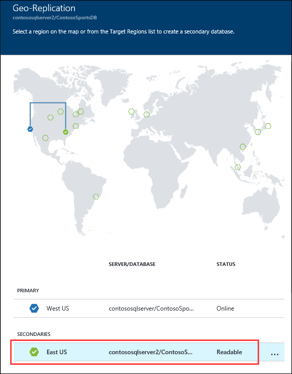

Information in this document, including URL and other Internet Web site references, is subject to change without notice. Unless otherwise noted, the example companies, organizations, products, domain names, e-mail addresses, logos, people, places, and events depicted herein are fictitious, and no association with any real company, organization, product, domain name, e-mail address, logo, person, place or event is intended or should be inferred. Complying with all applicable copyright laws is the responsibility of the user. Without limiting the rights under copyright, no part of this document may be reproduced, stored in or introduced into a retrieval system, or transmitted in any form or by any means (electronic, mechanical, photocopying, recording, or otherwise), or for any purpose, without the express written permission of Microsoft Corporation.
Microsoft may have patents, patent applications, trademarks, copyrights, or other intellectual property rights covering subject matter in this document. Except as expressly provided in any written license agreement from Microsoft, the furnishing of this document does not give you any license to these patents, trademarks, copyrights, or other intellectual property.
Microsoft and the trademarks listed at https://www.microsoft.com/en-us/legal/intellectualproperty/Trademarks/Usage/General.aspx are trademarks of the Microsoft group of companies. All other trademarks are property of their respective owners.
In this Microsoft Cloud Workshop, attendees will implement an end-to-end solution for e-commerce that is based on Azure App Services, Azure Active Directory, and Visual Studio Online. Attendees will ensure the solution is PCI-compliant, and appropriate security measures are put into place for both on-prem and public access scenarios.
Attendees will be better able to deploy and configure Azure Web Apps and associated services. In addition,
Configure Web Apps for authentication with Azure AD
Instrument and load-test the application with App Insights
Automate backend services using Cloud Services and Logic Apps
Overview
The Modern cloud apps Hackathon is a hands-on exercise that will challenge you to implement an end-to-end scenario using a supplied sample that is based on Microsoft Azure App Services and related services. The scenario will include implementing compute, storage, security, and scale using various components of Microsoft Azure. The Hackathon can be implemented on your own, but it is highly recommended to pair up with other members at the Hackathon to model a real-world experience much closer and to allow each member to share their expertise for the overall solution.
Requirements
Microsoft Azure subscription
Local machine or a virtual machine configured with:
Visual Studio 2017 Community Edition
Solution architecture
A diagram that depicts the various Azure PaaS services for the solution. Azure AD Org is used for authentication to the call center app. Azure AD B2C for authentication is used for authentication to the client app. SQL Database for the backend customer data. Azure App Services for the web and API apps. Order processing includes using Functions, Logic Apps, Queues and Storage. Azure App Insights is used for telemetry capture.
Contoso has asked you to create a proof of concept deployment in Microsoft Azure by deploying the web, database, and API applications for the solution as well as validating that the core functionality of the solution works. Ensure all resources use the same resource group previously created for the App Service Environment.
Task 1: Deploy the e-commerce website, SQL Database, and storage
In this exercise, you will provision a website via the Azure Web App + SQL template using the Microsoft Azure Portal. You will then edit the necessary configuration files in the starter project and deploy the e-commerce website.
Subtask 1: Create the Web App and SQL database instance
Navigate to the Azure Management portal, http://portal.azure.com, using a new tab or instance, navigate to create Web App + SQL.
Click New, and in the Marketplace search text box, enter “Web App + S.” Click the Web App + SQL item in the search results.
In the Azure Portal on the left, New is called out with a 1. In the New pane, the search field is called out with a 2, and displays Web App + S. In the results below, Web App + SQL is called out with a 3.
On the Everything blade, select Web App + SQL.
In the Everything blade, Results section, Web App + SQL is circled.
Click Create.
On the Web App + SQL blade, the Create button is circled.
On the Web App + SQL blade, select App Service plan/Location, Configure required settings.
Screenshot of the App Service plan/Location option.
Create a new App Service plan called ContosoSportsPlan in the same region and with the S1 Standard pricing tier.
On the Web App blade, specify the following configuration:
Specify a unique and valid name (until the green check mark appears)
Specify the contososports resource group.
Specify the name ContosoSportsPlan as the App Service plan and choose the same location as the Resource Group.
The Web App + SQL blade, and App Service plan blade display, with fields set to the previously defined settings. In the Web App + SQ:L blade, the App name field is selected, and is set to contososportsweb3. Resource group is selected, as is the App Service plan/location. In the App Service plan blade, on the left the Create New button is selected. In the App Service plan blade, the App Service plan field is set to ContosoSportsPlan, and the Location field is set to West US.
Select SQL Database Configure required settings, and click Create a new database.
In the Web App + SQL blade, the SQL Database (Configure required settings) option is selected. In the App Service plan blade, the Create a new database option is selected.
On the SQL Database blade, specify ContosSportsDB as the database name.
On the SQL Database blade, the Name field is set to ContosoSportsDB.
On the SQL Database blade, select TargetServer Configure required settings.
Screenshot of the Target Server Configure required settings option.
On the New server blade, specify the following configuration:
Server name: a unique value (ensure the green checkmark appears)
Server admin login: demouser
Password and Confirm Password: demo@pass123
Ensure the Location is the same region as the Web App.
Fields in the New server blade are circled and set to the previously defined settings.
Once the values are accepted in the New server blade, click Select.
Screenshot of the Select button.
On the SQL Database blade, click Select.
Screenshot of the Select button.
After the values are accepted, click Create.
Screenshot of the Create button.
This may take a couple minutes to provision the Web App and SQL Database resources.
After the Web App and SQL Database are provisioned, click More services>SQL databases followed by the name of the SQL Database you just created.
In the Azure Portal, on the left side More services is selected. Under Databases, SQL databases displays.
On the SQL Database blade, click the Show database connection strings link.
On the SQL Database blade, in the left pane, Overview is selected. In the right pane, under Essentials, the Connection strings (Show database connection strings) link is circled.
On the Database connection strings blade, select and copy the ADO.NET connection string. Then, save it in Notepad for use later.
Click the SQL Database server name link.
In the SQL Server Blade, Essentials section, the Server name contososqlserver.database.windows.net link is circled.
On the SQL Server blade, under Firewall, click Show firewall settings.
In the SQL Server Blade, Essentials section, the Firewall (Show firewall settings) link is circled.
On the Firewall Settings blade, specify a new rule named ALL, with START IP 0.0.0.0, and END IP 255.255.255.255.
Screenshot of the Rule name, Start IP. and End IP fields on the Firewall Settings blade.
This is only done to make the lab easier to do. In Production, you do NOT want to open up your SQL Database to all IP Addresses this way. In Production you will want to specify just the IP Addresses you wish to allow through the Firewall.
Click Save.
Screenshot of the Firewall settings Save button.
On the Success! dialog box, click OK.
Screenshot of the Success dialog box, which says that the server firewall rules have been successfully updated.
Close all configuration blades.
Subtask 2: Provision the storage account
Using a new tab or instance of your browser, navigate to the Azure Management portal http://portal.azure.com.
Click +New, Storage, and Storage account.
In the Azure Portal, in the left menu, the New button is marked with a 1. In the New blade, Storage is marked with a 2. In the Storage blade, under Featured Apps, Storage account - blob, file, table, queue is marked with a 3.
On the Create storage account blade specify the following configuration options:
Name: unique value for the storage account (ensure the green check mark appears)
Specify the Resource Group contososports
Specify the same Location as the resource group.
The fields in the Create Storage Account blade are set to the previously defined settings. In addition, the Name field set to contososportsstorage011, Deployment model is Resource Manager, Account kind is General purpose, and Performance is standard.
Click Create.
Screenshot of the Create button.
Once the storage account has completed provisioning, open the storage account by clicking More services >Storage accounts and clicking on the storage account name.
In the Azure Portal, More services is selected, and under Storage, Storage accounts displays.
On the Storage account blade, click Allsettings.
Screenshot of the Storage account blade Settings button.
On the Storage account blade, scroll down, and select the Access keys option.
In the Storage account blade, under Settings, Access keys is circled.
On the Access keys blade, click the copy button by key1 on the Connection string. Put the value in notepad for later reference.
contoso
Subtask 3: Update the configuration in the starter project
In the Azure Portal, click on Resource Groups. Then, click on the contososports resource group.
Click on the Web App just created in a previous step.
On the App Service blade, scroll down in the left pane, and click on Application settings.
Scroll down, and locate the App settings section.
Add a new App setting with the following values:
Key: AzureQueueConnectionString
Value: enter the Connection String for the Azure Account just created
Locate Connection Strings below App settings.
Add a new Connection String with the following values:
Name: ContosoSportsLeague
Value: enter the Connection String for the SQL Database just created
Type: SQL Database
In the Connection Strings section for the App Service blade, the new connection string with the previously defined values displays.
Ensure you replace the string placeholder values {your_username}{your_password_here} with the username and password you respectively setup during creation (demouser AND demo@pass123).
Click Save.
Subtask 4: Deploy the e-commerce Web App from Visual Studio
Navigate to the Contoso.Apps.SportsLeague.Web project located in the Web folder using the Solution Explorer of Visual Studio.
In Solution Explorer, under Solution 'Contoso.Apps.SportsLeague' (7 projects), Web is expanded, and under Web, Contoso.Apps.SportsLeague.Web is selected.
Right-click the Contoso.Apps.SportsLeague.Web project, and click Publish.
Choose Microsoft Azure App Service as the publish target, and choose Select Existing.
If prompted, log on with your credentials, and ensure the subscription you published earlier are selected.
Screenshot of the Microsoft account subscriptions tile.
Select the Contoso Sports Web App.
Under Subscriptions, under contososports, contososportsweb0 is selected.
Click OK, and click Publish to publish the Web Application.
In the Visual Studio Output view, you will see a status that indicates the Web App was published successfully.
Screenshot of the Visual Studio Output view, with the Publish Succeeded message circled.
Validate the website by clicking the Store link on the menu. As long as products return, the connection to the database is successful.
Screenshot of the Store link.
Task 2: Setup SQL Database Geo-Replication
In this exercise, the attendee will provision a secondary SQL Database and configure Geo-Replication using the Microsoft Azure Portal.
Subtask 1: Add secondary database
Using a new tab or instance of your browser, navigate to the Azure Management Portal http://portal.azure.com
Click More services > SQL databases, and click the name of the SQL Database you created previously.
Under Settings, click on Geo-Replication.
Select the Azure Region to place the Secondary within.
The Secondary Azure Region should be the Region Pair for the region the SQL Database is hosted in. The portal suggests the Region Pair to use by labeling it as “Recommended.”
On the Create secondary blade, select Secondary Type as Readable.
Select Target serverConfigure required settings.
the Target server Configure required settings option is selected.
On the New server blade, specify the following configuration:
Server name: a unique value (ensure the green checkmark appears)
Server admin login: demouser
Password and Confirm Password: demo@pass123
The fields in the New Server blade display with the previously defined settings.
Once the values are accepted in the New server blade, click Select.
On the Create secondary blade, click OK.
After the Geo-Replication has finished provisioning, click More services > SQL databases.
Click the name of the Secondary SQL Database you just created.
On the SQL Database blade, click the Show database connection strings link.
On the Database connection strings blade, select and copy the ADO.NET connection string, and save it in Notepad for use later.
Click the SQL Database Server name link.
On the SQL Server blade, under Firewall, click Show firewall settings.
On the Firewall Settings blade, specify a new rule named ALL, with START IP 0.0.0.0, and END IP 255.255.255.255.
Click Save.
On the Firewall Settings blade, the Save button is circled.
Since the Replication and Failover process can take anywhere from 10 – 30 minutes to complete, you have the choice to skip Subtask 2 through 5, and skip directly to Task 3. However, if you have the time, it is recommended that you complete these steps.
Using a new tab or instance of your browser, navigate to the Azure Management Portal http://portal.azure.com.
Click More services > SQL databases, and click the name of the SQL Database you created previously.
On the Settings blade, click Geo-Replication.
On the Geo-Replication blade, select the Secondary database.

Click the Failover button.
On the Failover prompt, click Yes.
The Failover may take a few minutes to complete. You can continue with the next Subtask modifying the Web App to point to the Secondary SQL Database while the Failover is pending.
Subtask 3: Test e-commerce Web App after Failover
Once completed, in the Azure Portal, click on SQL databases, and select the ContosoSportsDB secondary.
Next, click on Show database connection strings, and copy it off thereby replacing the user and password.
From the Azure portal, click on resource groups, and select contososports.
Click on the Web App just created in a previous step.
On the App Service blade, scroll down in the left pane, and click on Application settings.
Scroll down, and locate the Connection strings section.
Update the ContosoSportsLeague Connection String to the value of the Connection String for the Secondary SQL Database.
Ensure you replace the string placeholder values {your_username}{your_password_here} with the username and password you respectively setup during creation (demouser AND demo@pass123).
Click Save.
On the App Service blade, click on Overview.
On the Overview pane, click on the URL for the Web App to open it in a new browser tab.
After the e-commerce Web App loads in Internet Explorer, click on STORE in the top navigation bar of the website.
Verify the product list from the database displays.
Subtask 4: Revert Failover back to Primary database
Using a new tab or instance of your browser, navigate to the Azure Management Portal http://portal.azure.com.
Click More services > SQL databases, and click the name of the SQL Database you created previously.
On the Settings blade, click Geo-Replication.
On the Geo-Replication blade, select the Secondary database.
Click the Failover button.
On the Failover prompt, click Yes.
The Failover may take a few minutes to complete. You can continue with the next Subtask modifying the Web App to point back to the Primary SQL Database while the Failover is pending.
Subtask 5: Test e-commerce Web App after reverting Failover
In the Azure Portal, click on Resource Groups>contososports resource group.
Click on the Web App just created in a previous step.
On the App Service blade, scroll down in the left pane, and click on Application settings.
Scroll down, and locate the Connection strings section.
Update the ContosoSportsLeague Connection String to the value of the Connection String for the Primary SQL Database.
Ensure you replace the string placeholder values {your_username}{your_password_here} with the username and password you respectively setup during creation (demouser AND demo@pass123).
Click Save.
The Save button is circled on the App Service blade.
On the App Service blade, click on Overview.
On the Overview pane, click on the URL for the Web App to open it in a new browser tab.
After the e-commerce Web App loads in Internet Explorer, click on STORE in the top navigation bar of the website.
Verify the product list from the database displays.
Task 3: Deploying the call center admin website
In this exercise, you will provision a website via the Azure Web App template using the Microsoft Azure Portal. You will then edit the necessary configuration files in the Starter Project and deploy the call center admin website.
Subtask 1: Provision the call center admin Web App
Using a new tab or instance of your browser, navigate to the Azure Management portal http://portal.azure.com.
Click New>Web + mobile>Web App.
Specify a unique URL for the Web App, and ensure the same App Service Plan and resource group you have used throughout the lab are selected.
On the Web App blade, the App name field is set to contososportsadmin4.
Click on App Service plan/Location, and select the ContosoSportsPlan used by the front-end Web App.
After the values are accepted, click Create.
Screenshot of the Create button.
Subtask 2: Update the configuration in the starter project
Navigate to the App Service blade for the Call Center Admin App just provisioned.
On the App Service blade, click on Application settings in the left pane.
In the Settings section of the App Service blade, Application settings is selected.
Scroll down, and locate the Connection strings section.
The Connection strings section is circled on the App Service blade.
Add a new Connection string with the following values:
Name: ContosoSportsLeague
Value: enter the Connection String for the SQL Database that was created
Type: SQL Database
The Connection Strings fields display the previously defined values.
Ensure you replace the string placeholder values {your_username}{your_password_here} with the username and password you respectively setup during creation (demouser AND demo@pass123).
Click Save.
the Save button is circled on the App Service blade.
Subtask 3: Deploy the call center admin Web App from Visual Studio
Navigate to the Contoso.Apps.SportsLeague.Admin project located in the Web folder using the Solution Explorer in Visual Studio.
In Solution Explorer, under Solution Contoso.Apps.SportsLeague, The Web folder is expanded, and Contoso.Apps.SportsLeague.Admin is selected.
Right-click the Contoso.Apps.SportsLeague.Admin project, and click Publish.
In Solution Explorer, the right-click menu for Contoso.Apps.SportsLeague.Admin displays, and Publish is selected.
Choose Microsoft Azure App Service as the publish target, and choose Select Existing.
On the Publish tab, Microsoft Azure App Service is selected. Below that, the radio button is selected for Select Existing.
Select the Web App for the Call Center Admin App.
In the App Service section, in the tree view at the bottom, the contososports folder is expanded, and contososportsadmin4 is selected.
Click OK, and click Publish to deploy the site.
The website should load / display the following:
The Contoso website displays the Contoso Sports League Admin webpage, which says that orders that display below are sorted by date, and you can click on an order to see its details. However, at this time, there is no data available under Completed Orders.
Task 4: Deploying the payment gateway
In this exercise, the attendee will provision an Azure API app template using the Microsoft Azure Portal. The attendee will then deploy the payment gateway API to the API app.
Subtask 1: Provision the payment gateway API app
Using a new tab or instance of your browser, navigate to the Azure Management Portal http://portal.azure.com.
Click +New, type API App into the Search the marketplace box, and press Enter.
In the Azure Portal left menu, New is selected. In the New blade, the search field is set to API App.
Click on API App in the search results list.
Click on Create.
On the new API App blade, specify a unique name for the App Name, and ensure the previously used Resource Group and App Service Plan are selected.
Click on App Service plan/Location, and select the same App Service Plan used for the other Web App services.
After the values are accepted, click Create.
Subtask 2: Deploy the Contoso.Apps.PaymentGateway project in Visual Studio
Navigate to the Contoso.Apps.PaymentGateway project located in the APIs folder using the Solution Explorer in Visual Studio.
In Solution Explorer, under Solution Contoso.Apps.SportsLeague, the API folder is expanded, and Contoso.Apps.PaymentGateway is selected.
Right-click the Contoso.Apps.PaymentGateway project, and click Publish.
In Solution Explorer, Contoso.Apps.PaymentGateway is selected, and in its right-click menu, Publish is selected.
On the Publish Web dialog box, click Microsoft Azure App Service, and choose Select Existing.
In the Publish web dialog box, Microsoft Azure App Service is selected, as is the radio button for Select Existing.
Select the Payment Gateway API app created earlier, click OK>Publish.
In the App Service section, the contososports folder is expanded, and PaymentsAPIO is selected.
In the Visual Studio Output view, you will see a status indicating the Web App was published successfully.
The Visual Studio output shows that the web app was published successfully.
Record the value of the deployed API App URL for later use.
Task 5: Deploying the offers Web API
In this exercise, the attendee will provision an Azure API app template using the Microsoft Azure Portal. The attendee will then deploy the offers Web API.
Subtask 1: Provision the offers Web API app
Using a new tab or instance of your browser, navigate to the Azure Management Portal (http://portal.azure.com).
Click +New, type API App into the Search the marketplace box, and press Enter.
In the Azure Portal left menu, New is selected. On the right, under New, API App is typed in the Search box.
Click on API App in the search results list.
Click on Create.
On the new API App blade, specify a unique name for the App Service Name, and ensure the previously used Resource Group and App Service Plan are selected.
In the API App blade, OffersAPI4 is typed in the App name field.
After the values are accepted, click Create.
When the Web App template has completed provisioning, open the new API App by clicking More services>App Services >Offers API (just created).
In the Azure Portal, on the left More services is selected, and on the right under Web + Mobile, App Services displays.
On the App Service blade, scroll down, and click on CORS within the API section of the left pane.
In the App Service blade, under API, CORS is selected.
In the ALLOWED ORIGINS text box, specify, and click Save.
Subtask 3: Update the configuration in the starter project
On the App Service blade for the Offers API, click on Application settings
Scroll down, and locate the Connection strings section.
Add a new Connection string with the following values:
Name: ContosoSportsLeague
Value: enter the Connection String for the SQL Database that was created
Type: **SQL Database
Ensure you replace the string placeholder values {your_username}{your_password_here} with the username and password you respectively setup during creation (demouser AND demo@pass123).
Click Save.
The Save button is selected in the App Service blade.
Subtask 4: Deploy the Contoso.Apps.SportsLeague.Offers project in Visual Studio
Navigate to the Contoso.Apps.SportsLeague.Offers project located in the APIs folder using the Solution Explorer in Visual Studio.
In Solution Explorer, under Solution Contoso.Apps.SportsLeague, the API folder is expanded, and Contoso.Apps.SportsLeague.Offer is selected.
Right-click the Contoso.Apps.SportsLeague.Offers project, and select Publish.
In Solution Explorer, from the Contoso.Apps.SportsLeague.Admin right-click menu, Publish is selected.
On the Publish Web dialog box, click Microsoft Azure App Service, and choose Select Existing.
Select the Offers API app created earlier, and click OK>Publish.
In the App Service section, the contososports folder is expanded, and OffersAPI4 is selected.
In the Visual Studio Output view, you will see a status the API app was published successfully.
Record the value of the deployed API app URL for later use.
Task 6: Update and deploy the e-commerce website
Subtask 1: Update the Application Settings for the Web App that hosts the Contoso.Apps.SportsLeague.Web project
Using a new tab or instance of your browser, navigate to the Azure Management Portal http://portal.azure.com.
Click on Resource groups>contososports resource group.
Click on the App Service Web App for the front-end Web Application.
On the App Service blade, scroll down, and click on Application settings in the left pane.
In the App Service blade, under settings, Application settings is selected.
Scroll down, and locate the App settings section.
Add a new App Setting with the following values:
Key: paymentsAPIUrl
Value: enter the HTTPS URL for the Payments API App with /api/nvp appended to the end. Ex: https://paymentsapi0.azurewebsites.net/api/nvp
Add a new App Setting with the following values:
Key: offersAPIUrl
Value: enter the HTTPS URL for the Offers API App with /api/get appended to the end. Ex: https://offersapi4.azurewebsites.net/api/get
Click on Save.
Note: Ensure both of the API URLs are using SSL (https://), or you will see a CORS errors.
Subtask 2: Validate App Settings are correct
On the App Service blade, click on Overview.
In the Overview pane, click on the URL for the Web App to open it in a new browser tab.
On the homepage, you should see the latest offers populated from the Offers API.
On the Contoso Sports League webpage, Today's offers display: Baseball socks, Road bike, and baseball mitt.
Submit several test orders to ensure all pieces of the site are functional.
On the Contoso Sports League webpage, the message Order Completed displays.
Leader Note: If the attendee is still experiencing CORS errors ensure the URLs to the Web App in Azure local host are exact.
Exercise 2: Identity and security
Duration: 75 Minutes
The Contoso call center admin application will only be accessible by users of the Contoso Active Directory environment. You have been asked to create a new Azure AD Tenant and secure the application so only users from the tenant can log on.
Task 1: Enable Azure AD Premium Trial
Note: this task is optional, and it is valid only if you are a global administrator on the Azure AD tenant associated with your subscription.
Navigate to the Azure Management portal, http://portal.azure.com, using a new tab or instance.
Click on More services followed by Azure Active Directory under the SECURITY + IDENTITY section.
On the Azure Active Directory blade, locate and click on the Company branding option.
Click on the option to Get a free Premium trial.
If you already have a Premium Azure Active Directory, skip to Task 2.
On the Activate blade, click on the Free Trial link within the AZURE AD PREMIUM box.
On the Active Azure AD Premium trial blade, click the Activate button.
Close the Azure Active Directory blades.
Task 2: Create a new Contoso user
Note: this task is optional, and it is valid only if you are a global administrator on the Azure AD tenant associated with your subscription.
Navigate to the Azure Management portal, http://portal.azure.com, using a new tab or instance.
Click on More services>Azure Active Directory under the SECURITY + IDENTITY section.
On the Azure Active Directory blade, click on Domain names.
Copy the Domain Name for your Azure AD Tenant. It will be in the format: [your tenant].onmicrosoft.com This will be used for creating the new user’s Username.
On the Azure Active Directory blade, click on Users and groups followed by All users.
Click on +Add to add a new user.
On the User blade, specify a user’s Name and Username. Specify the Username to be at the domain name for your Azure AD Tenant. For example: tbaker@[your tenant].onmicrosoft.com
Click on the Show Password checkbox, and make a note of the Password for use later.
Click Create.
Screenshot of the Create button.
Task 3: Configure access control for the call center administration Web Application
Note: This task is optional, and it is valid only if you have the right to create applications in your Azure AD Tenant.
Subtask 1: Enable Azure AD Authentication
On the left navigation of the Azure Portal, select App Services (or click More services>App Services).
Screenshot of the App Services button.
On the Web Apps page, select the call center administration Web App.
In the App Services blade, under Name, contososportsadmin4 is selected.
Click the Authentication / Authorization tile.
On the App Service blade, under Settings, Authentication / Authorization is selected.
Change App Service Authentication to On, and change the dropdown to Log in with Azure Active Directory.
The Authentication / Authorization section displays with App Service Authentication button set to On, and Log in with Azure Active Directory selected in the Action to take when request is not authenticated drop-down list box.
Click on the Azure Active Directory.
On the Azure Active Directory Settings blade, change Management mode to Express.
At the bottom of the Azure Active Directory Settings blade, Management mode is set to Express.
Click OK.
Change the Action to take when request is not authenticated option to Login with Azure Active Directory.
The Action to take when request is not authenticated field is set to Log in with Azure Authentication.
In the Authentication / Authorization blade, click Save.
The Save button is circled in the App Service blade.
Subtask 2: Verify the call center administration website uses the access control logon
Close your browser (or use an alternative), and launch a browser is InPrivate or Incognito mode. Navigate to the call center administration website.
The browser will redirect to the non-branded Access Control logon URL. You can log on with your Microsoft account or the Contoso test user you created earlier.
The contososportsadmin4 Access control logon webpage displays in a private / incognito window.
After you log on and accept the consent, your browser will be redirected to the Contoso Sports League Admin webpage.
The Contoso Sports League Admin webpage displays with one Completed Order.
Verify in the upper-right corner you see the link Logged In. If it is not configured, you will see Sign in.
Task 4: Apply custom branding for the Azure Active Directory logon page
Note: this task is optional, and it is valid only if you are a global administrator on the Azure AD tenant associated with your subscription, and you completed the Enabling Azure AD Premium exercise.
Navigate to the Azure Management portal, http://portal.azure.com, using a new tab or instance.
Click on More services>Azure Active Directory under the SECURITY + IDENTITY section.
On the Azure Active Directory blade, click on Company branding.
Click on the Configure company branding now link.
On the Configure company branding blade, select the default_signin_illustration.jpg image file from C:\hackathon for the Sign-in page image.
Select the logo-60-280.png image file from C:\hackathon for the Banner image.
Click Save.
The Save button is circled on the Configure company branding blade.
Task 5: Verify the branding has been successfully applied to the Azure Active Directory logon page
Close any previously authenticated browser sessions to the call center administration website, reopen using InPrivate or Incognito mode, and navigate to the call center administration website.
The browser will redirect to the branded access control logon URL.
The Call center administration Sign in webpage displays in an InPrivate / Incognito browser
After you log on, your browser will be redirected to the Contoso Sports League Admin webpage.
The Contoso Sports League Admin webpage displays with one completed order.
Verify in the upper-right corner you see the link Logged in.
Screenshot of the Logged in message.
If you run the app using localhost, ensure connection strings for all of the web.config files in the solution have the placeholders removed with actual values. Search on web.config in the solution explorer to come up with the list.
In Solution Explorer, the following path is expanded: API\Contoso.Apps.PaymentGateway\Areas\HelpPage\Views. In the Views folder, Web.config is selected. In addition, the Web.config file is highlighted in several other folders.
Exercise 3: Enable Azure B2C for customer site
Duration: 75 minutes
In this exercise, you will configure an Azure AD Business to Consumer (B2C) instance to enable authentication and policies for sign-in, sign-out and profile policies for the Contoso E-Commerce site.
Task 1: Create a new directory
Log in to the Azure portal by using your existing Azure subscription or by starting a free trial. At the left bottom of the screen, click New>Azure Active Directory B2C.
In the Azure Portal, under New, in the search field is active directory B2C.In the Everything blade, the active directory B2C text is in the Search field, and under Results, Azure Active Directory B2C displays.
Enter for the name, ContosoB2C and a unique domain name and region. Click Create a new Azure AD B2C Tenant, and it will take a minute to complete. Click the link to manage your new B2C Directory.
In the Azure Portal, under Create new B2C Tenant or Link to existing Tenant, Create a new Azure AD B2C Tenant is selected. On the right, the word "here," which is a link, is circled in the Click here to manage your new directory message.
Click on the orange No Subscription message for instructions on how to link to an active subscription.
In the Azure Portal, on the left, the "No subscription linked to this B2C tenant or the Subscription needs your attention" message is selected. On the right, under Subscription reminder, the three steps to link the B2C tenant to an Azure subscription are circled.
Note: Essentially, you will need to switch back to your previous Azure AD tenant, and then launch the Azure AD B2C creation wizard again.
Click on Link an existing Azure AD B2C Tenant to my Azure subscription, and select the Tenant you just created in the dropdown list and existing resource group. Press Create.
Open the new Azure AD B2C tenant.
Click on All Settings > Applications > +Add.
In the Azure AD B2C Settings window, on the left, All Settings is selected. In the middle, under Settings, under Manage, Applications is selected. On the right, under Applications, the Add button is selected.
Task 2: Add a new application
Specify the following configuration options for the Web App:
Name: Contoso B2C Application
Reply URL: https://[your web url].azurewebsites.net <- this should be the HTTPS URL to the Contoso E-Commerce Site.
Include Web App / web API: Yes
The New application fields are set to the previously defined values.
Click Create.
Click the application you just created, and copy down the globally unique Application ID you will use later in your code.
Task 3: Create Policies, Sign up
Open your Azure AD B2C Tenant in the Azure management portal.
To enable sign-up on your application, you will need to create a sign-up policy. This policy describes the experiences consumers will go through during sign-up and the contents of tokens the application will receive on successful sign-ups. Click Sign-up or sign-in policies as well as +Add at the top of the blade.
In the Azure Portal, on the left, under Policies, Sign-up or sign-in policies is selected. On the right, the Add button is circled.
The Name determines the sign-up policy name used by your application. For example, enter "SiUp."
Click Identity providers, and select "Email signup." Optionally, you can also select social identity providers (if previously configured for the tenant). Click OK.
In the Add policy blade, Identity providers is selected. In the Select identity providers blade, Email signup is selected.
Click Sign-up attributes. Here, you choose attributes you want to collect from the consumer during sign-up. For example, select "Country/Region," "Display Name" and "Postal Code." Click OK.
In the Add policy blade, Sign-up attributes, with the message "3 selected" is selected. In the Select sign-up attributes blade, the following strings are selected: Country / Region, Display Name, and Postal Code.
Click Application claims. Here, you choose claims you want returned in the tokens sent back to your application after a successful sign-up experience. For example, select "Display Name," "Identity Provider," "Postal Code," "User is new" and "User's Object ID." Click OK.
In the Add policy blade, Application claims with the message "5 Selected" is selected. In the Select application claims blade, the following five strings are selected: Display Name, Identity Provider, Postal Code, User is new, and User's Object ID.
Click Create. Observe the policy just created appears as "B2C_1_SiUp" (the B2C_1_ fragment is automatically added) in the Sign-up policies blade.
Open the policy by clicking "B2C_1_SiUp."
Select "Contoso B2C app" in the Applications drop-down.
Click Run now. A new browser tab opens, and you can run through the consumer experience of signing up for your application.
Task 4: Create a sign-in policy
To enable sign-in on your application, you will need to create a sign-in policy. This policy describes the experiences consumers will go through during sign-in and the contents of tokens the application will receive on successful sign-ins.
Click Sign-in policies.
s
Click +Add at the top of the blade.
The Name determines the sign-in policy name used by your application. For example, enter "SiIn" <the 3rd letter is an upper case i>.
Click Identity providers and select "Local Account SignIn." Optionally, you can also select social identity providers, if already configured. Click OK.
In the Add policy blade, Identity providers with the message "1 Selected" is selected. In the Select identity providers blade, Local Account SignIn is selected.
Click Application claims. Here you choose claims that you want returned in the tokens sent back to your application after a successful sign-in experience. For example, select "Display Name," "Identity Provider," "Postal Code," and "User's Object ID." Click OK.
In the Add policy blade, Application claims (4 Selected) is selected. In the Select application claims blade, the following five application claims are selected: Display Name, Identity Provider, Postal Code, and User's Object ID.
Click Create. Observe the policy just created appears as "B2C_1_SiIn" (the B2C_1_ fragment is automatically added) in the Sign-in policies blade.
Open the policy by clicking "B2C_1_SiIn."
Select "Contoso B2C app" in the Applications drop-down.
Click Run now. A new browser tab opens, and you can run through the consumer experience of signing into your application.
Task 5: Create a profile editing policy
To enable profile editing on your application, you will need to create a profile editing policy. This policy describes the experiences that consumers will go through during profile editing and the contents of tokens that the application will receive on successful completion.
Click Profile editing policies.
In the Policies section, Profile editing policies is selected.
Click +Add at the top of the blade.
The Name determines the profile editing policy name used by your application. For example, enter "SiPe."
Click Identity providers, and select "Local Account SignIn." Optionally, you can also select social identity providers, if already configured. Click OK.
In the Add policy blade, Identity providers (1 Selected) is selected. In the Select identity providers blade, Local Account SignIn is selected.
Click Profile attributes. Here, you choose attributes the consumer can view and edit. For example, select "Country/Region," "Display Name," “Job Title," "Postal Code,"”State/Province," and “Street Address.” Click OK.
In the Add policy blade,Profile attributes (6 Selected) is selected. In the Profile attributes blade, the following six profile attributes are selected: Country / Region, Display Name, Job Title, Postal Code, State / Province, and Street Address.
Click Application claims. Here, you choose claims you want returned in the tokens sent back to your application after a successful profile editing experience. For example, select "Display Name" and "Postal Code." Click OK
Click Create. Observe the policy just created appears as "B2C_1_SiPe" (the B2C_1_ fragment is automatically added) in the Profile editing policies blade.
Open the policy by clicking "B2C_1_SiPe."
Select "Contoso B2C app" in the Applications drop-down.
Click Run now. A new browser tab opens, and you can run through the profile editing consumer experience in your application.
Task 6: Modify the Contoso.App.SportsLeague.Web
Within Visual Studio, click on View -> Other Windows -> Package Manager Console. Execute the following commands to install these the required NuGet Packages.
In the App settings section, the previously mentioned settings are circled.
Click Save when you are complete.
Within Visual Studio, right click on the Contoso.Apps.SportsLeague.Web project, and click Add -> New Item.
In Solution Explorer, the Web folder is expanded, and Contoso.Apps.SportsLeague.Web is selected. From its right-click menu, Add is selected, and from its menu, New item is selected.
In the Search Installed Templates search box search for OWIN. Click the OWIN Startup class, change the name to Startup.cs, and then click Add.
In the new class, insert the word partial in between public and class to make this a partial class.
In the New class section, the word "partial" is circled in the line, "public partial class Startup".
Add the following code between the brackets of the Configuration method.
ConfigureAuth(app);
// Startup.cs
public partial class Startup
{
public void Configuration(IAppBuilder app)
{
ConfigureAuth(app);
}
}
Note: The OWIN middleware will invoke the Configuration(...) method when your app starts.
Right click on the App_Start folder, and click Add -> Class.
Select Visual C# and Class, and name the new file Startup.Auth.cs.
Replace the entire contents of Startup.Auth.cs with the following code:
// App\_Start\\Startup.Auth.cs
using System;
using Owin;
using Microsoft.Owin.Security;
using Microsoft.Owin.Security.Cookies;
using Microsoft.Owin.Security.OpenIdConnect;
using System.Threading.Tasks;
using Microsoft.Owin.Security.Notifications;
using Microsoft.IdentityModel.Protocols;
using System.Configuration;
using System.IdentityModel.Tokens;
using System.Web.Helpers;
using System.IdentityModel.Claims;
namespace Contoso.Apps.SportsLeague.Web
{
public partial class Startup
{
// App config settings
private static string clientId = ConfigurationManager.AppSettings\[\"ida:ClientId\"\];
private static string aadInstance = ConfigurationManager.AppSettings\[\"ida:AadInstance\"\];
private static string tenant = ConfigurationManager.AppSettings\[\"ida:Tenant\"\];
private static string redirectUri = ConfigurationManager.AppSettings\[\"ida:RedirectUri\"\];
// B2C policy identifiers
public static string SignUpPolicyId = ConfigurationManager.AppSettings\[\"ida:SignUpPolicyId\"\];
public static string SignInPolicyId = ConfigurationManager.AppSettings\[\"ida:SignInPolicyId\"\];
public static string ProfilePolicyId = ConfigurationManager.AppSettings\[\"ida:UserProfilePolicyId\"\];
public void ConfigureAuth(IAppBuilder app)
{
app.SetDefaultSignInAsAuthenticationType(CookieAuthenticationDefaults.AuthenticationType);
app.UseCookieAuthentication(new CookieAuthenticationOptions());
// Configure OpenID Connect middleware for each policy
app.UseOpenIdConnectAuthentication(CreateOptionsFromPolicy(SignUpPolicyId));
app.UseOpenIdConnectAuthentication(CreateOptionsFromPolicy(ProfilePolicyId));
app.UseOpenIdConnectAuthentication(CreateOptionsFromPolicy(SignInPolicyId));
AntiForgeryConfig.UniqueClaimTypeIdentifier = ClaimTypes.NameIdentifier;
}
// Used for avoiding yellow-screen-of-death
private Task AuthenticationFailed(AuthenticationFailedNotification\<OpenIdConnectMessage, OpenIdConnectAuthenticationOptions\> notification)
{
notification.HandleResponse();
if (notification.Exception.Message == \"access\_denied\")
{
notification.Response.Redirect(\"/\");
}
else
{
notification.Response.Redirect(\"/Home/Error?message=\" + notification.Exception.Message);
}
return Task.FromResult(0);
}
private OpenIdConnectAuthenticationOptions CreateOptionsFromPolicy(string policy)
{
return new OpenIdConnectAuthenticationOptions
{
// For each policy, give OWIN the policy-specific metadata address, and
// set the authentication type to the id of the policy
MetadataAddress = String.Format(aadInstance, tenant, policy),
AuthenticationType = policy,
// These are standard OpenID Connect parameters, with values pulled from web.config
ClientId = clientId,
RedirectUri = redirectUri,
PostLogoutRedirectUri = redirectUri,
Notifications = new OpenIdConnectAuthenticationNotifications
{
AuthenticationFailed = AuthenticationFailed,
},
Scope = \"openid\",
ResponseType = \"id\_token\",
// This piece is optional - it is used for displaying the user\'s name in the navigation bar.
TokenValidationParameters = new TokenValidationParameters
{
NameClaimType = \"name\",
},
};
}
}
}
Note: The parameters you provide in OpenIdConnectAuthenticationOptions serve as coordinates for your app to communicate with Azure AD. You also need to set up cookie authentication. The OpenID Connect middleware uses cookies to maintain user sessions, among other things.
Task 7: Send authentication requests to Azure AD
Your app is now properly configured to communicate with Azure AD B2C by using the OpenID Connect authentication protocol. OWIN has taken care of all of the details of crafting authentication messages, validating tokens from Azure AD, and maintaining user session. All that remains is to initiate each user's flow.
Right click on the Controllers folder, and click Add -> Controller.
Select MVC 5 Controller – Empty, and click Add. Replace Default with Account for the controller name.
Add the following using statement to the top of the controller:
using Microsoft.Owin.Security;
Replace the default controller method Index
The Default controller method Index is circled.
With the following code:
// Controllers\\AccountController.cs
public void SignIn()
{
if (!Request.IsAuthenticated)
{
// To execute a policy, you simply need to trigger an OWIN challenge.
// You can indicate which policy to use by specifying the policy id as the AuthenticationType
HttpContext.GetOwinContext().Authentication.Challenge(
new AuthenticationProperties () { RedirectUri = \"/\" }, Startup.SignInPolicyId);
}
}
public void SignUp()
{
if (!Request.IsAuthenticated)
{
HttpContext.GetOwinContext().Authentication.Challenge(
new AuthenticationProperties() { RedirectUri = \"/\" }, Startup.SignUpPolicyId);
}
}
public void Profile()
{
if (Request.IsAuthenticated)
{
HttpContext.GetOwinContext().Authentication.Challenge(
new AuthenticationProperties() { RedirectUri = \"/\" }, Startup.ProfilePolicyId);
}
}
You can also use OWIN to sign out the user from the app. Add the following method to the account controller (Controllers\AccountController.cs):
C\# Copy
// Controllers\\AccountController.cs
public void SignOut()
{
// To sign out the user, you should issue an OpenIDConnect sign out request
if (Request.IsAuthenticated)
{
IEnumerable\<AuthenticationDescription\> authTypes = HttpContext.GetOwinContext().Authentication.GetAuthenticationTypes();
HttpContext.GetOwinContext().Authentication.SignOut(authTypes.Select(t =\> t.AuthenticationType).ToArray());
Request.GetOwinContext().Authentication.GetAuthenticationTypes();
}
}
Task 8: Display user information
When you authenticate users by using OpenID Connect, Azure AD returns an ID token to the app that contains claims. These are assertions about the user. You can use claims to personalize your app. You can access user claims in your controllers via the ClaimsPrincipal.Current security principal object.
Open the Controllers\HomeController.cs file and add the following using statements at the end of the other using statements.
using System.Linq;
using System.Security.Claims;
Open the Controllers\HomeController.cs file and add the following method:
You can access any claim that your application receives in the same way. A list of all the claims the app receives is available for you on the Claims page. Right click on Views -> Home, click Add -> MVC 5 View Page (Razor) and name it Claims.
Open the Claims.cshtml file and replace the code with the following:
Right click on the Contoso.Apps.SportsLeague.Web project, and click Publish. Follow the steps to deploy the updated application to the Microsoft Azure Web App.
Launch a browser outside of Visual Studio for testing if the page loads in Visual Studio.
Test out Sign up. Next, test Sign out.
When you click on Claims and are not signed in, it will bring you to the sign-in page and then display the claim information. Sign in, and test Edit Profile.
On the Contoso website, the following links are circled: Claims, Sign up, and Sign in.
Claims information page
Exercise 4: Enabling Telemetry with Application Insights
To configure the application for logging and diagnostics, you have been asked to configure Microsoft Azure Application Insights and add some custom telemetry.
Note: You may need to create an Application Insights Resource in Azure portal depending on your subscription rights. After it is created, you can configure it and add to the project using the tasks below. To create a new Application Insights resource.
Click Create a resource. Search the marketplace for Application Insights. Select Application Insights.
In this screenshot a new application insights instance is created using the Azure portal.
Click the Create button.
A screenshot that provides an overview of Application Insights and a button to click Create.
Enter the name as Contoso.Apps.SportsLeague.Web. Choose the existing resource group of contoso. Location should be the same location as your resource group.
A dialog that shows the properties of the application insights resource
Task 1: Configure the application for telemetry
Subtask 1: Add Application Insights Telemetry to the e-commerce website project
Open the Solution Contoso.Apps.SportsLeague in Visual Studio.
Navigate to the Contoso.Apps.SportsLeague.Web project located in the Web folder using the Solution Explorer in Visual Studio.
In Solution Explorer, the Web folder is expanded, and Contoso.Apps.SportsLeague.Web is selected.
Right-click the Contoso.Apps.SportsLeague.Web project, and select Add | Application Insights Telemetry...
Expand the Sending telemetry to section.
Click on the Configure settings… button.
In the Sending telemetry to section, the link to Configure settings is circled.
In the Application Insights Configuration dialog box, change the Resource Group to the contososports resource group used to host the Web App, and choose the New Application Insights Resource. Next, click OK, followed by Update Resource.
In the Application Insights Configuration dialog box, the Resource Group contososports is selected. In the Application Insights Resource drop-down list box, Contoso.Apps.SportsLeague.Web is selected.
Press Finish on the Application Insights window.
Once it completes, it displays the following Output and opens a new browser window
Screenshot of Output.
Open the file \Helpers\TelemetryHelper.cs located in the Contoso.Apps.SportsLeague.Web project.
Add the following using statement to the top of the file:
using Microsoft.ApplicationInsights;
Add the following code to the TrackException method to instantiate the telemetry client and track exceptions.
var client = new TelemetryClient();
client.TrackException(new Microsoft.ApplicationInsights.DataContracts.ExceptionTelemetry(exc));
Add the following code to the TrackEvent method to instantiate the telemetry client and track event data.
var client = new TelemetryClient();
client.TrackEvent(eventName, properties);
Save the TelemetryHelper.cs file.
Subtask 2: Enable client side telemetry
Open the Azure Management Portal (http://portal.azure.com). Click More services followed by Application Insights.
On the left of the Azure Portal, More services is selected. On the right, under Monitoring and Management, Application Insights is selected.
Click the Application Insights instance associated with the Contoso E-Commerce Site.
Under Name, Contoso.Apps.SportsLeague.Web displays.
In CONFIGURE menu click on Getting Started.
From the Configure menu, Getting started is selected.
Next, click the MONITOR AND DIAGNOSE CLIENT SIDE APPLICATION arrow. This will open the Client application monitoring and diagnosis blade.
Select and copy the full contents of the JavaScript on the Client application monitoring and diagnosis blade.
Under Guidance in the Client application monitoring and diagnosis blade, JavaScript displays.
Navigate to the Contoso.Apps.SportsLeague.Web project located in the Web folder using the Solution Explorer in Visual Studio.
Open Views > Shared > _Layout.cshtml.
In Solution Explorer, under Views\Shared, Layout.cshtml is selected.
Paste in the code before the </head> tag.
In Layout.cshtml, code displays, and several lines are selected.
Save the _Layout.cshtml file.
Subtask 3: Deploy the e-commerce Web App from Visual Studio
Navigate to the Contoso.Apps.SportsLeague.Web project located in the Web folder using the Solution Explorer in Visual Studio.
In Solution Explorer, under the Web folder, Contoso.Apps.SportsLeague.Web is selected.
Right-click the Contoso.Apps.SportsLeague.Web project, and select Publish.
Click Publish again when the Publish dialog appears.
Launch a browser outside of Visual Studio for testing if the page is loaded in Visual Studio.
Click a few links on the published E-Commerce website, and submit several orders to generate some sample telemetry.
Task 2: Creating the web performance test and load test
Subtask 1: Create the load test
Open the Azure Management Portal (http://portal.azure.com). Click More services followed by Application Insights.
On the left side of the Azure Portal, More services is selected. On the right side, under Developer Tools, Application Insights is selected.
Click the Application Insights instance associated with the Contoso E-Commerce Site.
In the Name section, Contoso.Apps.SportsLeague.Web is selected.
Click Performance Testing.
On the Configure menu, Performance Testing is selected.
Click the Set Account button to associate/create a Visual Studio Team Services account.
On the Application Insights blade, Set Account is selected.
On the Account tile, click Or Create New.
On the Account tile, the Or Create New link is circled.
Specify a unique name for the account and select a region. Note the region may differ from the region you have deployed your resources.
On the Account Settings blade, under Team Services Account, ContosoSportsTesting04 is selected.
Click Subscription, and select your Subscription.
Click Select location. Next, select a Location.
Then, click OK.
The VSTS account creation will take a minute to complete.
Click New.
On the Application Insights blade, the New button is circled.
Click on Configure Test Using.
Specify the URL to the Contoso E-Commerce site, and click Done
Name the test ContosoSportsTest, and click the Run test button.
Wait until the load test has completed.
In the Recent runs section, the load test for ContosoSportsTest has a state of Completed.
Subtask 2: View the Application Insights logs
Using a new tab or instance of your browser, navigate to the Azure Management portal http://portal.azure.com.
On the left menu area, click More services.
On the More services blade, select Application Insights.
On the Application Insights blade, select the Application Insights configuration you created for the e-commerce website.
The Application Insights configuration option Contoso.Apps.SportsLeague.Web is selected.
View the performance timeline to see the overall number of requests and page load time.
The Health graph displays the performance overview timeline of overall requests and response times.
Under Usage Preview. Check out the Events Button.
A screenshot using the Events button under the Usage Preview section
After several minutes, you should see several Custom events from your previous order testing. This is reported through the TelemetryClient’s TrackEvent method.
Note: If you do not see data here, come back later after the lab is complete.
In the Custom events section, OrderCompleted is 3, and SuccessfulPaymentAuth is 3.
Drilling into the OrderCompleted events provides you with more detail about the specific order.
Screenshot of the OrderCompleted blade.
Exercise 5: Automating backend processes with Azure Functions and Logic Apps
Contoso wants to automate the process of generating receipts in PDF format and alerting users when their orders have been processed using Azure Logic App and Functions. To run custom snippets of C# or node.js in logic apps, you can create custom functions through Azure Functions. Azure Functions offers server-free computing in Microsoft Azure and are useful for performing these tasks:
Advanced formatting or compute of fields in logic apps
Perform calculations in a workflow.
Extend the logic app functionality with functions that are supported in C# or node.js
Task 1: Create an Azure Function to Generate PDF Receipts
Click the New button found on the upper left-hand corner of the Azure portal and then click Compute > Function App, select your Subscription, type a unique App name that identifies your function app, then specify the following settings:
Resource Group: Use the existing resource group for contososports.
Consumption plan: The default plan type for Azure Functions. When you choose a consumption plan, you must also choose the Location.
App Service plan: An App Service plan requires you to create an App Service plan/location or select an existing one. These settings determine the location, features, cost, and compute resources associated with your app.
Storage account: Each function app requires a storage account. Choose the existing storage account by clicking Select Existing and choosing the storage account in the contososports resource group.
On the left side of the OrderCompleted blade, the New button is selected. In the middle, under New, Compute is selected. On the right, under Compute, Function App is selected.
Click Create to provision and deploy the new function app.
Under Function App, the App name field is set to ContosoFunctionApp, and at the bottom the Create button is selected.
Open the Function App you just created. Click the + beside Functions, scroll down, and select Custom function.
In Function Apps, on the left side Function is selected. On the right, at the bottom, the Custom function link is selected.
Select GenericWebHook-CSharp with a Name of ContosoMakePDF, and press Create.
In the Azure Portal, under Choose a template below, the GenericWebHook-CSharp tile is selected. Below, the Name your function field is ContosoMakePDF, and the Create button is selected.
Expand the View files area on the right of the code window and then click Upload.
Upload the following files in the (Contoso Sports League\Contoso.CreatePDFReport) folder beneath: C:\Hackathon.
ViewModels.csx
CreatePdfReport.csx
run.csx
sample.dat
StorageMethods.csx
Project.json
The previously mentioned files display.
Click on run.csx, to refresh the code editor.
In the Code Editor, on the right, run.csx is selected.
Open the Log windows on the bottom.
The Expand button on the Logs window menu bar is selected.
Note: You should see several messages about downloading dependent assemblies such as the Azure SDK and iText Sharp that were defined in the project.json file.
Select the name of your function app, and then click on Platform Features followed by Application settings.
In the Azure Portal, under Function Apps, ContosoFunctionApp is selected. Under General Settings, Application settings is selected. The Platform Features link is selected.
Add a new entry called contososportsstorage, and paste the value of the connection string noted in an earlier exercise. Click Save after adding the value.
In teh App settings section, contososportsstorage is selected.
Note: You can find the value by opening the storage account, and clicking the Access Keys tile.
Open the sample.dat file, and select as well as copy (Ctrl+C) the test data.
The Sample.dat file displays.
Select the Run.csx file, click on the Test tab, and replace the contents by pasting (CTRL-V) in the Test tab Request Body.
Screenshot of the run.csx file, and the Test tab request body.
Select the View Files tab, select Run.csx, and click run.
You should see messages in the Logs window stating the Webhook was triggered, and the PDF was generated / saving it the storage account. Also, you should see that actual message text in the Output Window.
In the run.csx file, under Logs, messages stating the Webhook was triggered and the PDF was generated are circled. In the Test tab request body, under Output, the message text is circled.
To see the PDF indeed landed in the receipts container in blob storage, download the Microsoft Storage Explorer at http://storageexplorer.com. Use Microsoft Storage explorer to verify the PDF landed on the Blob Container for receipts. You may need to refresh and/or select another folder, and arrive back to the receipts folder to see the PDF.
In Storage Explorer, on the left, the following path is expanded: Storage Accounts\contososportsstorage01\Blub containers. Under Blob Containers, receipts is circled. On the right, on the receipts tab, ContosoSportsLeague-Store-Receipts-38.pdf is circled.
Task 2: Create an Azure Logic App to Process Orders
Without writing any code, you can automate business processes more easily and quickly when you create and run workflows with Azure Logic Apps. Logic Apps provide a way to simplify and implement scalable integrations and workflows in the cloud. It provides a visual designer to model and automate your process as a series of steps known as a workflow. There are many connectors across the cloud and on-premises to quickly integrate across services and protocols.
The advantages of using Logic Apps include the following:
Saving time by designing complex processes using easy to understand design tools
Implementing patterns and workflows seamlessly, that would otherwise be difficult to implement in code
Getting started quickly from templates
Customizing your logic app with your own custom APIs, code, and actions
Connect and synchronize disparate systems across on-premises and the cloud
Build off of BizTalk server, API Management, Azure Functions, and Azure Service Bus with first-class integration support
Next, let us create a Logic App that will trigger when an item is added to the receiptgenerator queue. In the Azure Management Portal, click the + button, search for Logic App, click the returned Logic App result, and click Create.
In the Azure Portal, under Marketplace, Everything is selected. Under Everything, Logic App is in the search field. Under Name, Logic App is circled.
Fill out the name as ContosoLogicApplication along with your subscription, and use the existing resource group contososports. Choose the same region as your Web App and storage account. Click Create.
In the Create logic app blade, ContosoLogicApplication is in the Name field. Under Resource group, the Use existing radio button is selected, and contososports is the name.
Open up the logic app after it is deployed by clicking more services and search on logic.
In the Azure Portal, logic is in the search field, and under that, Logic apps is selected.
Click on the Logic App Designer link.
In the Logic app blade, under Development tools, Logic App Designer is selected.
In the Logic Apps Designer, select Blank Logic App.
In the Logic Apps Designer, the Blank Logic App tile is selected.
Select Azure Queues.
In the Services section, the Azure Queues tile is selected.
Select Azure Queues – When there are messages in a queue.
In the Search all triggers section, Azure Queues - When there are messages in a queue is selected.
Specify ContosoStorage as the connection name, select the Contoso storage account from the list, and click Create.
In When there are messages in a queue, the Connection Name is ContosoStorage, and under Storage Account, contosostorage123321 is selected.
Select the receiptgenerator queue from the drop-down, click New Step, and Add an Action.
Under When there are messages in a queue, the Queue name is set to receiptgenerator. At the bottom, the New Step and Add in action buttons are selected.
Select Azure Functions.
In the Choose an action section, under Services ,the Azure Functions tile is selected.
Click Azure Functions – Choose an Azure function.
Under Azure Functions, on the Actions tab, Azure Functions - Choose an Azure function is selected.
Select the Azure function created earlier followed by selecting the ContosoMakePDF function.
Under Under Azure Functions, under Actions, Azure Functions - ContosoMakePDF is selected.
Type this in the Request Body {“Order”: [pick MessageText from list on right] }. Make sure the syntax is json format. Sometimes the “:” will go to the right side of MessageText by mistake. Keep it on the left. It should look like this:
Click Save to save the Logic App.
There is one modification we need to make in the code. Click on the CodeView button.
In the Logic App, the CodeView button is selected from the top menu.
Find the line of code in the body for the Order item that reads the MessageText value from the queue, and add the base64 function around it to ensure it encoded before passing it off to the Azure function. It should look like the following:
In the Order item code, the following line of code is circled: "Order": "@{base64(triggerBody()?['MessageText'])}"
Run the logic app. It should process the orders you have submitted previously to test PDF generation. Using Azure Storage Explorer or Visual Studio Cloud Explorer you can navigate to the storage account and open the receipts container to see the created PDFs.
In Azure Storage Explorer, on the left, the following tree view is expanded: Storage Accounts\contososportsstorage01r\Blob Containers. Under Blob Containers, receipts is selected. On the right, the ContosoSportsLeague-Store-Receipt-72.pdf is selected.
Double click it to see the Purchase receipt.
A Purchase Receipt displays.
Now, add two more steps to the flow for updating the database and removing the message from the queue after it has been processed. Switch back to the designer, click + New Step and select Add an Action.
In Designer, the New Step link is circled. Under New step, the Add an action tile is circled.
Select SQL Server.
In the Services section, under Services, SQL Server is selected.
Select SQL Server - Update row.
In the SQL Server section, on the Actions tab, SQL Server - Update row is selected.
Name the connection ContosoSportsDB, and select the primary ContosoSportsDB database for your solution. Under the user name and password used to create it, click Create.
TheUpdate row section displays the previously defined settings.
From the drop-down select the name of the table, Orders.
In the Update row section, under Table name, Orders is selected.
Press save and ignore the error. Navigate to the code view.
The code should now look as follows for the update_row method:
Screenshot of replacement code.
Save and return to the designer.
Your updated designer view should look like this:
The Update row section displays the purchase fields.
Finally, let us add one more step to remove the message from the queue. Press +New Step and Add an Action. Type in Queue in the search box, and select Azure Queues – Delete message.
In the Choose an action section, queue is typed in the search field. Under Services, Azure Queues is selected. On the Actions tab, Azure Queues - Delete message is selected.
Select the receiptgenerator queue from the list.
Select Message Id>Pop Receipt from the list, and click Save.
In the Update row section, on the left in the Delete message fields, Message ID and Pop receipt are selected. On the right, under When there are messages in a queue, Message ID and Pop receipt are selected.
Click Run on the Logic App Desinger, and then run the Contoso sports Web App and check out an Item.
Run the admin website app, and select the last Details link in the list.
You should now see a Download receipt link because the database has been updated.
In the Order Details window, the Download receipt link is circled.
Click on the Download receipt link to see the receipt.
Screenshot of the Receipt.
Return to the Logic app and you should see all green check marks for each step. If not, click the yellow status icon to find out details.
In the Logic app, all steps have green checkmarks.
Task 3: Use Twilio to send SMS Order Notifications
Screenshot of the Twilio account Sign up for free webpage.
When you sign up for a free Twilio trial, you will be asked to verify your personal phone number. This is an important security step that is mandatory for trying Twilio.
On the Verification prompt, the "We need to verify you're a human" message displays. Under that is a phone number field, and a Verify via SMS button.
Click All Products & Services.
Click on Phone Numbers.
Click Get Started.
Click the Get your first Twilio phone number button.
Record the Phone Number, click the Choose this Number button on the Your first Twilio Phone Number prompt, and click Done.
Click on Home, record the Account SID and Auth Token for use when configuring the Twilio Connector.
Subtask 2: Create a new logic app
Open SQL Server Management Studio and connect to the SQL Database for the ContosoSportsDB database.
Under the ContosoSportsDB database, expand Programmability, right-click on Stored Procedures, click New, followed by Stored Procedure…
Replace the Stored Procedure Template code with the following:
CREATE PROCEDURE \[dbo\].\[GetUnprocessedOrders\]
AS
declare \@returnCode int
SELECT \@returnCode = COUNT(\*) FROM \[dbo\].\[Orders\] WHERE PaymentTransactionId is not null AND PaymentTransactionId \<\> \'\' AND Phone is not null AND Phone \<\> \'\' AND SMSOptIn = \'1\' AND SMSStatus is null
return \@returnCode
GO
Click on Execute in the toolbar, or press the F5 key.
Delete the SQL script for the Stored Procedure from the code editor, and replace it with the following:
CREATE PROCEDURE \[dbo\].\[ProcessOrders\]
AS
SELECT \* FROM \[dbo\].\[Orders\] WHERE PaymentTransactionId is not null AND PaymentTransactionId \<\> \'\' AND Phone is not null AND Phone \<\> \'\' AND SMSOptIn = \'1\' AND SMSStatus is null;
UPDATE \[dbo\].\[Orders\] SET SMSStatus = \'sent\' WHERE PaymentTransactionId is not null AND PaymentTransactionId \<\> \'\' AND Phone is not null AND Phone \<\> \'\' AND SMSOptIn = \'1\' AND SMSStatus is null;
Click on Execute in the toolbar, or press the F5 key.
Open the Azure Management Portal (http://portal.azure.com), and click +New> Web + Mobile > Logic App.
On the left side of the Azure Portal, the New button is selected. In the middle, under New, under Marketplace, Web + Mobile is selected. On the right, under Web + Mobile, Logic App is selected.
On the Create logic app blade, assign a value for Name, and set the Resource Group to contososports.
In the Create logic app blade, the Name field is set to contososportssms. Under Resource group, Use existing is selected, and contososports is selected.
Open the Logic App by clicking More services -> Logic Apps, and click on the Logic App just created.
In the Azure Portal on the left, More services is selected, and Logic Apps displays on the right.
Select the Blank LogicApp Template.
On the Logic Apps Designer, click Schedule.
In the Logic Apps Designer, the Schedule tile is selected.
Set the FREQUENCY to MINUTE, and INTERVAL to 1.
Under Recurrence, the Frequency field is Minute, and the Interval field is 1.
Click the New Step followed by Add an action.
Under Recurrence, the New step button and Add an action buttons are selected.
Type SQL Server into the filter box, and click the SQL Server – Execute stored procedure action.
Under Choose an action, sql server is typed in the search field. On the Actions tab, SQL Server (Execute stored procedure) is selected.
The first time you add a SQL action, you will be prompted for the connection information. Name the connection ContosoDB, input the server and database details used earlier, and click Create.
Select the [dbo].[GetUnprocessedOrders] stored procedure from the drop-down on the Procedure Name field.
In the Execute stored procedure section, the Procedure name is [dbo].[GetUnprocessedOrders].
Click on New Step, and click the Add a condition link.
The New step and Add a condition buttons are selected.
Specify ReturnCode for the OBJECT NAME, set the RELATIONSHIP to is greater than, and set the VALUE to 0.
Under Condition, Object Name is ReturnCode, Relationship is is greater than, and Value is 0.
Click the Add an action link on the If yes condition.
Under If yes, do nothing, the Add an action button is selected.
Type SQL Server into the filter box, and click the SQL Server – Execute stored procedure action.
Under If Yes, SQL Server - Execute stored procedure is circled.
Select the ProcessOrders stored procedure in the Procedure name dropdown.
Under If Yes, Execute stored procedure 2 is selected, and the Procedure name is [dbo].[ProcessOrders].
Click the Add an action link.
The Add an action button is selected.
Type Twilio in the filter box, and click the Twilio – Send Text Message (SMS) connector.
Under Show Microsoft managed APIs, the Search box is set to Twilio, and below, Twilio - Send Text Message (SMS) is selected.
Set the Connection Name to Twilio, specify your Twilio Account SID and Authentication Token, then click the Create button.
In the Twilio - Send Text Message (SMS) section, fields are set to the previously defined settings.
Using the drop-down, select your Twilio number for the FROM PHONE NUMBER field. Specify a place holder phone number in the TO PHONE NUMBER, and a TEXT message.
On the Logic App toolbar click the Code View button.
The code view button is selected on the Logic App toolbar.
Find the Send_Text_Message_(SMS) action, and modify the body property of the Twilio action:
The Code view displays the text message, and the from and to phone numbers.
Add the following code between Hello and the comma.
@{item()['FirstName']}
The Code view now displays the added code in the text message.
Modify the to property to pull the phone number from the item.
@{item()['Phone']}
The to phone number code now displays the updated line of code.
Immediately before the Send_Text_Message_(SMS), create a new line, and add the following code:
After the code for the Send_Text_Message_(SMS) has been modified to be contained within the forEach_email action, it should look like the following:
The Code view displays the code from "Foreach" to "Execute stored procedure."
Click Save on the toolbar to enable the logic app.
On the Logic Apps Designer toolbar, the Save button is selected.
Your workflow should look like below, and you should receive a text for each order you have placed.
The Workflow diagram begins with Recurrence, then flows to Execute stored procedure, then to Condition. The Condition fields are as follows: Object Name, ReturnCode; Relationship, is greater than; Value, 0. Below the Workflow diagram is an If Yes box, with a workflow that begins wtih Execute stored procedure 2, and flows to forEach email. There is also an If No, Do Nothing box.
After the hands-on lab
Duration: 10 minutes
Task 1: Delete resources
Since the HOL is now complete, go ahead and delete all of the Resource Groups that were created for this HOL. You will no longer need those resources and it will be beneficial to clean up your Azure Subscription.
You should follow all steps provided after attending the hands-on lab.


 s
s


![In the Order item code, the following line of code is circled: "Order": "@{base64(triggerBody()?['MessageText'])}"](images/Hands-onlabstep-by-step-Moderncloudappsimages/media/image251.png "Order item code")


![In the Execute stored procedure section, the Procedure name is [dbo].[GetUnprocessedOrders].](images/Hands-onlabstep-by-step-Moderncloudappsimages/media/image288.png "Execute stored procedure section")


![Under If Yes, Execute stored procedure 2 is selected, and the Procedure name is [dbo].[ProcessOrders].](images/Hands-onlabstep-by-step-Moderncloudappsimages/media/image293.png "If yes section")


")
")